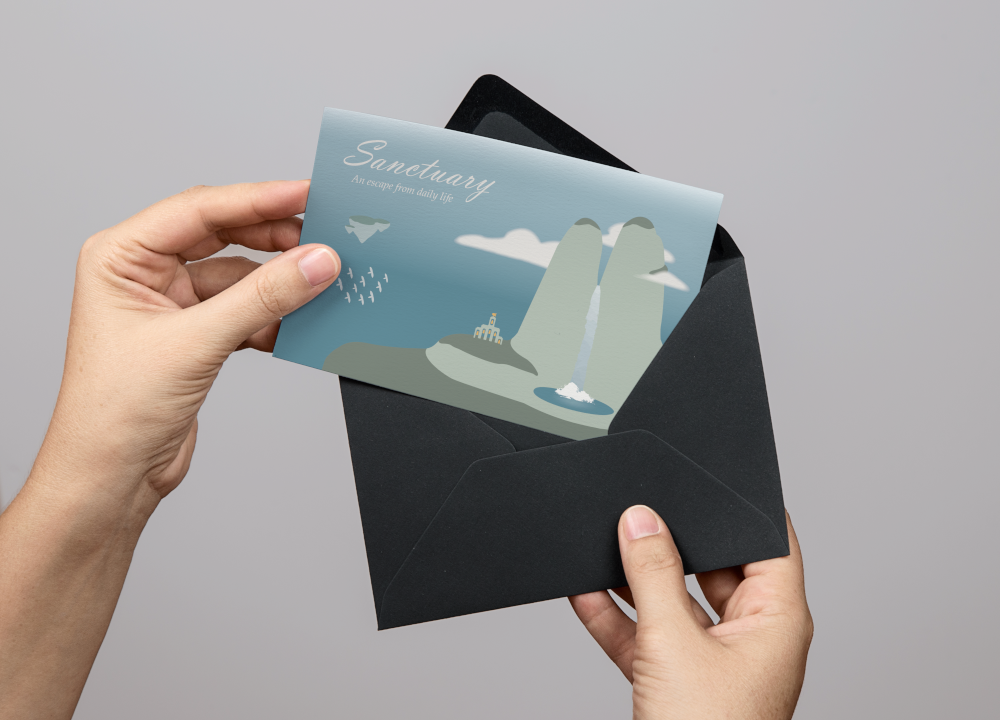
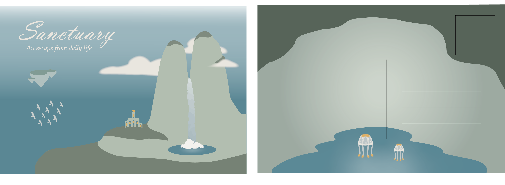

This project is a travel postcard created for a fictional location, designed to capture a relaxing, vacation-like atmosphere. The light, natural, color palette, illustrative landscapes, and soft gradients create a peaceful fantasy environment. Designed as both promotional material and collectable artwork, created as vector images in Adobe Illustrator. Made for 6 x 4 in. print including 1/8th in. bleed.
